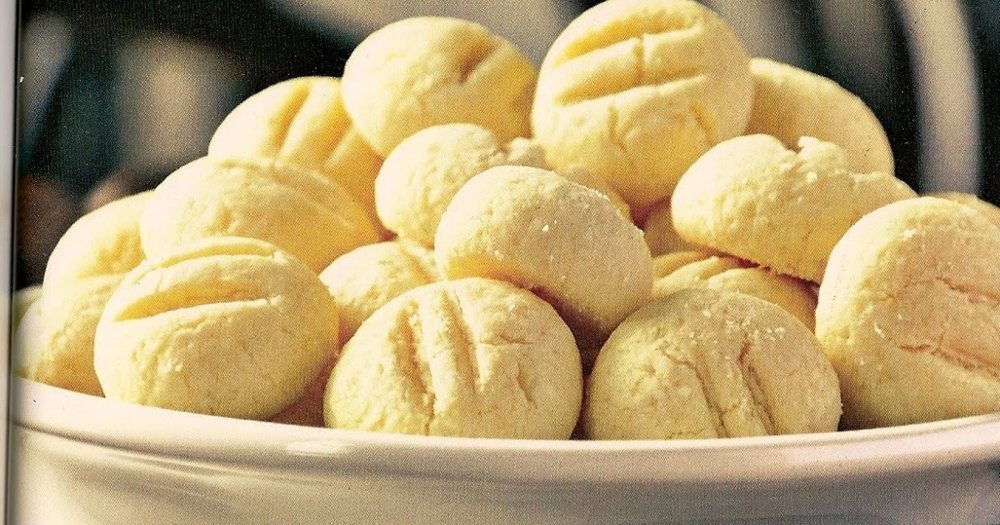

Doces · Biscoitos
Sequilhos de coco

Ingredientes
- Manteiga para untar
- Farinha de trigo para polvilhar
- 1 ⅓ xícara de farinha de trigo
- ¾ xícara de açúcar
- 1 colher (chá) de fermento em pó
- 1 pacote pequeno (50 g) de coco ralado
- 1 pitada de sal
- ¾ xícara de manteiga
- 1 gema
Modo de preparo
- Preaqueça o forno em temperatura média (180 °C). Unte com manteiga e polvilhe com farinha de trigo duas assadeiras grandes.
- Numa vasilha, junte os ingredientes secos: a farinha, o açúcar, o fermento, o coco ralado e o sal. Misture bem. Faça uma cova no meio e coloque aí a manteiga cortada em pedacinhos e a gema. Vá incorporando os ingredientes, com a ponta dos dedos, até obter uma massa ligada que se desprenda das mãos.
- Polvilhe com farinha de trigo uma superfície de trabalho e, com as mãos, faça cordõezinhos de massa e corte como se estivesse preparando nhoque. Marque cada sequilho com um garfo.
- Coloque nas assadeiras e leve ao forno preaquecido por 15 minutos. Retire do forno, deixe esfriar e congele.
Observação
Para que os sequilhos assem por igual, troque as assadeiras de lugar na metade do tempo de cozimento indicado na receita. Congelamento: coloque os sequilhos num saco plástico, retire o ar e vede bem; etiquete e leve ao freezer para congelarem. Descongelamento: em temperatura ambiente por cerca de 1 hora.